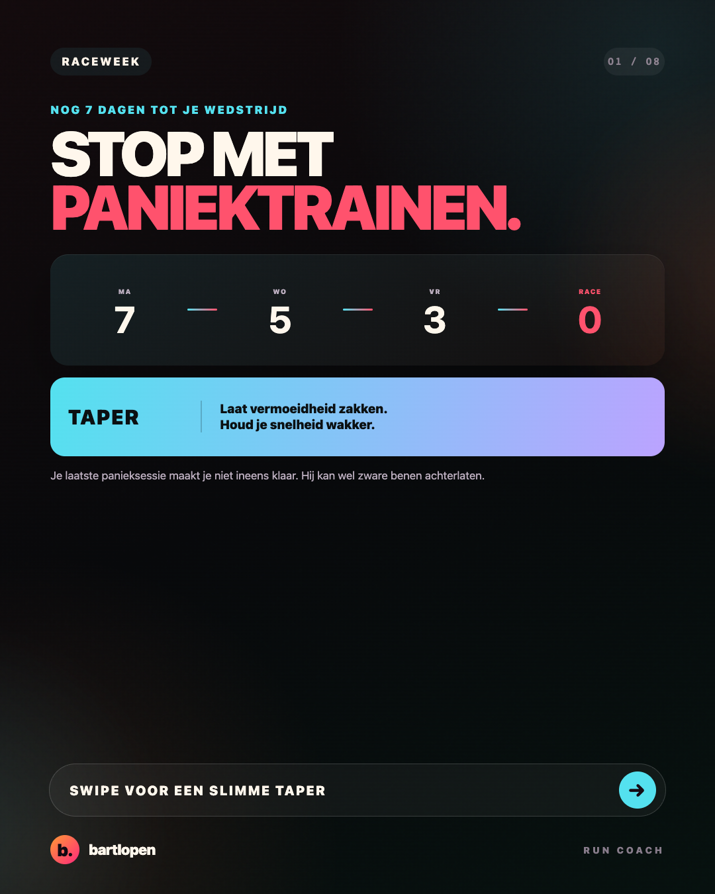
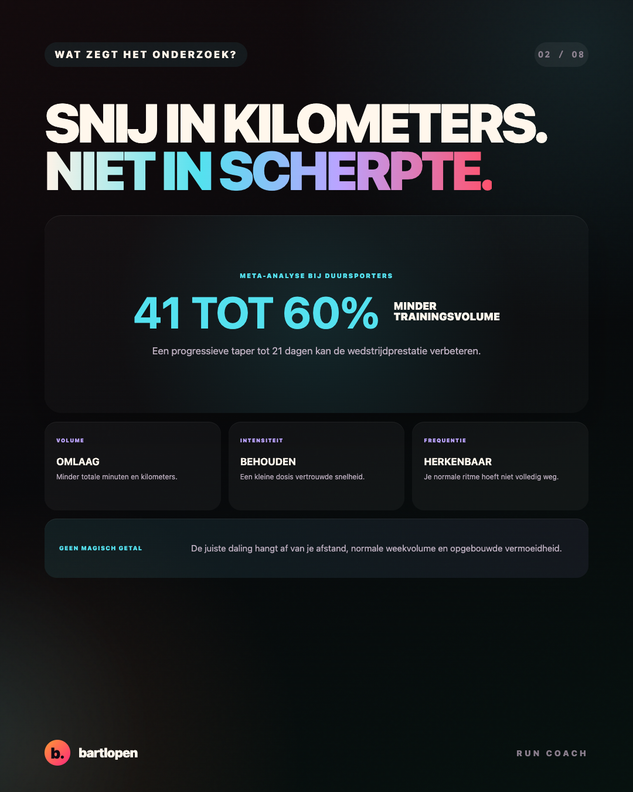
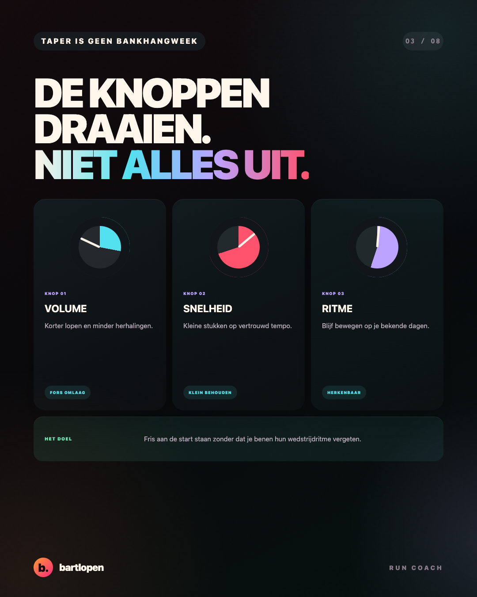
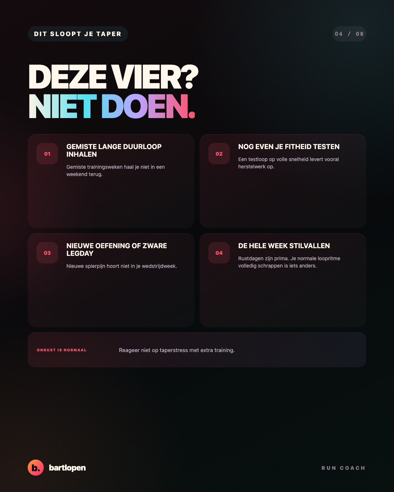
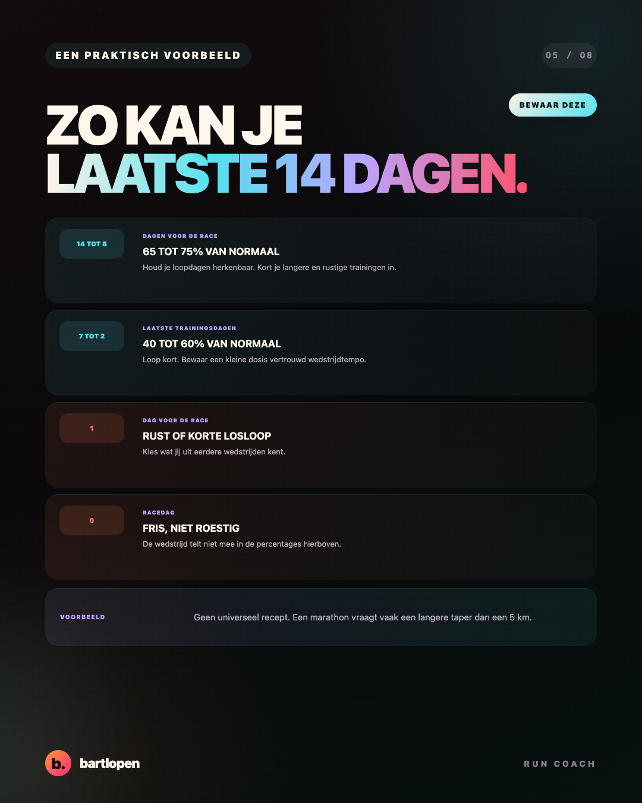
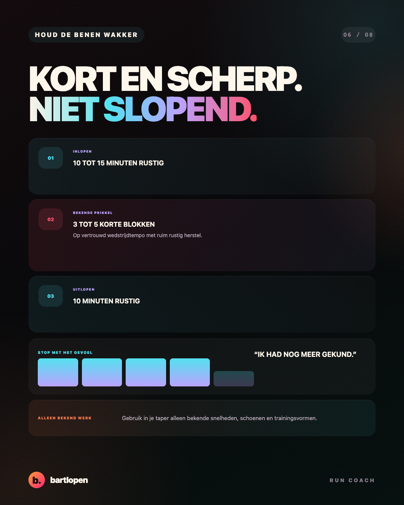
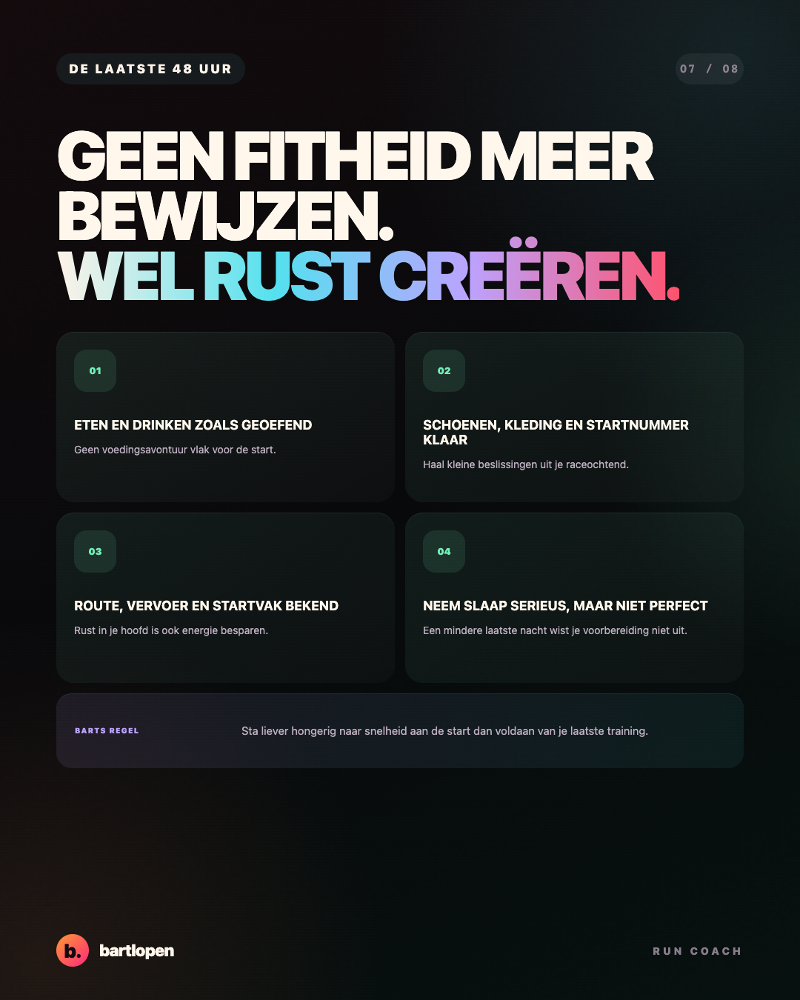
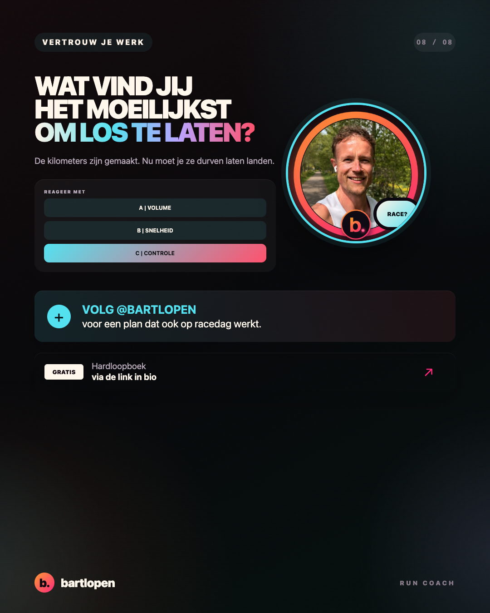

SLIDE 01 ↗Stop met
paniektrainen
Acht praktische slides over minder trainen, scherp blijven en fris aan de start staan.

SLIDE 02 ↗
SLIDE 03 ↗
SLIDE 04 ↗
SLIDE 05 ↗
SLIDE 06 ↗
SLIDE 07 ↗
SLIDE 08 ↗Caption
NOG 7 DAGEN? STOP MET PANIEKTRAINEN. 🫣 In je laatste wedstrijdweek hoef je geen fitheid meer te bewijzen. Je wilt vooral vermoeidheid laten zakken zonder je wedstrijdritme kwijt te raken. Een sterke taper betekent meestal: 📉 minder totale kilometers ⚡ een kleine dosis vertrouwde snelheid 📅 een herkenbaar loopritme 🛑 geen gemiste trainingen meer inhalen Onderzoek bij duursporters laat zien dat een progressieve daling van het trainingsvolume, terwijl intensiteit en frequentie herkenbaar blijven, de prestatie kan verbeteren. Het precieze percentage verschilt per afstand, trainingsweek en loper. Mijn coachregel: sta liever hongerig naar snelheid aan de start dan voldaan van je laatste training. Dus geen laatste fitheidstest, geen nieuwe zware legday en geen lange duurloop om je onzekerheid weg te trainen. Wat vind jij het moeilijkst om los te laten: A volume, B snelheid of C controle? 👇 #taper #wedstrijdweek #hardlopen #marathontraining #hardloopschema #runningtips #bartlopen
Bronnen: een systematische review en meta-analyse over taperen bij duursporters, een analyse van taperstrategieën bij meer dan 158.000 recreatieve marathonlopers en onderzoek naar taperstrategieën van Britse toplopers.